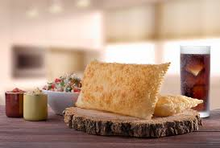
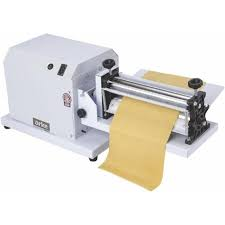
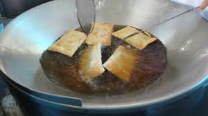
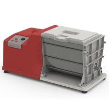

Você quer abrir sua pastelaria?

Primeiro vou te falar a origem dessse prato delicioso
- De onde veio?
- Apesar de atualmente ser considerado uma iguaria da culinária do nosso país, o pastel tem origem asiática. Segundo pesquisadores, a ideia é que ele tenha se originado de duas especialidades: do tradicional rolinho primavera da culinária chinesa e do guioza japonês.
Quais maquinas são utilizadas!
- Cilíndro de masssa, você encontra aqui.
- Fritadeira eletríca ou a gás, você encontra aqui.
- Batedor de massa, você encontra aqui.
  
Se quer por onde começar click aqui